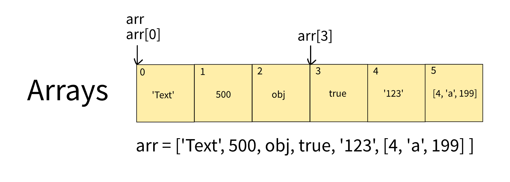
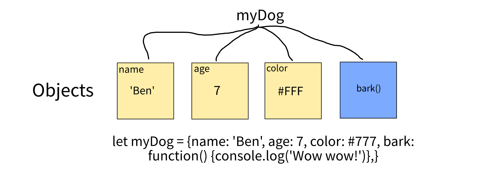

Javascript & DOM
What is Javascript and its releationship to HTML and CSS?
Continuing on the Kiwi Fried Chicken menu story I used as analogy to describe HTML and CSS in the sprint reflection, after the success of the unified menu design thanks to KFCML and KFCSS, the CEO of KFC has decided to improve the ordering experience of the customers by making the menu live and interactive.
The idea is that in addtion to the hard copy menu there will be certain actions or plays triggered when the customers order something on the menu.
For example,
- when the customer order a dish, the order taker will ding a bell once and shout "Choice!" to confirm that the dish is added to the order, or otherwise the order taker will ding the bell twice and say "Not a problem!" if a dish is cancelled.
- if the restaurant is out of fish supply, the order taker will mark "Unavailable" next to Fish and Chips on the menu so the customers will be informed when making their orders.
To implement this idea, the challenge is KFCML and KFCSS are static meaning they are all about the look of the menu, so the CEO introducs KFCScript to describe what actions to be taken by the order takers when a certain thing happens and in a unified way so that all the shops will act the exact same way and can be updated easily and fast without having to teach them one by one again and again when the scripts change.
For examples, the KFCScript scripts should look like the following for the examples above.
The syntax of KFCScript
if [something happens (the thing)]: do step 1 (what to say or where to do what); do step 2; do step 3;
else if[something else happens (the thing)]: do step 1; do step 2;
else: do step 1; do step 2;
Example 1:
if [any dish is ordered]: ding the bell(once); say ("Choice!") in an (exciting) tone;
else if [any dish is cancelled]: ding the bell(twice); say ("Not a problem!") in an (soft) tone;
else: wait;
Example 2:
if [any ingrediante (fish) is out]: change the font of ("Fish and Chips") to strike-through in the KFCSS description of the menu;
As a result, the sale has been boosted again because the customers like this interactive ordering experience, and the workers at the restaurants are very clear about what actions to take so they are happy to work there as well.
Explain control flow and loop using an example process from everyday life
OK, let's forget about KFC for this topic.
An everyday life example of control flow is as below. The steps have to be done one by one from the top meaning the order should not be changed otherwise the result would be different. The ordered steps is a control flow.
To cook Thai curry
Step 1: Cut meat and veges in bite size
Step 2: Add onion and curry paste in a wok on a medium heat
Step 3: Add meat until browned
Step 4: Add coconut milk
Step 5: Add veges and wait until cooked
A loop is a kind of control flow where some if not all steps repeat themself to achieve some result.
An example of loops would be doing laundry in batches because the steps to wash a batch of items are usually
the same but just with different batch of items to wash until all finish. They can be repeated as many times as needed.
To wash items
Step 1: Turn on the washing machine
Step 2: Change mode to Daily 60
Step 3: Open the drum door
Step 4: Put items in the drum
Step 5: Press start and wait until finish
Step 6: Open the door and unload the wash
Step 7: If there are more items to wash, go to Step 3
Step 8: Turn off the machine
As you can see in this example, step 7 is where the loop happens.
Describe what the DOM is and an example of how you might interact with it
The DOM is similar to maps that we use everyday but instead of street addresses it accommondates the information of everything we have in an HTML page and provides a system to locate any specific thing ("a node") in the page by the relationship between the node and its parent and children.
Like we were to locate a friend's house in a map, given the address, we may find the country first("the root node"), and then the state, the city, the suburb and finally the stree number.
The DOM also allows us to update the information of a specific node, so we may almost do whatever we want with that node, such as changing its content and style, adding or removing a child node, and even its own existence.
Explain the difference between accessing data from arrays and objects.
Arrays store data in a continuous and ordered sequence of blocks where each block is next to each other so any block can only be located by its index("the offset from 0") which is relative meaning to visit a block at index 3 for example we must "go through"(at least feels like) the blocks prior at index 0, 1 and 2.
Whereas objects store data in key-value pairs like a dictionary where each item("the value") is associated with an unique name("the key"). Given the key, we can directly "jump" to the target item.
Explain what functions are and why they are helpful.
Functions are like tools in a toolbox. Like say we were making a chair, we would just pick up and use ("call") a hammer, a ruler, a hand saw and maybe a screwdriver whenever we need to do a certain task during the making.
Tools("functions") are helpful because they are already there and we can expect the same outcome from using them, so that we can focus on our goal("the project") without having to worry about making a hammer every time when we need one.